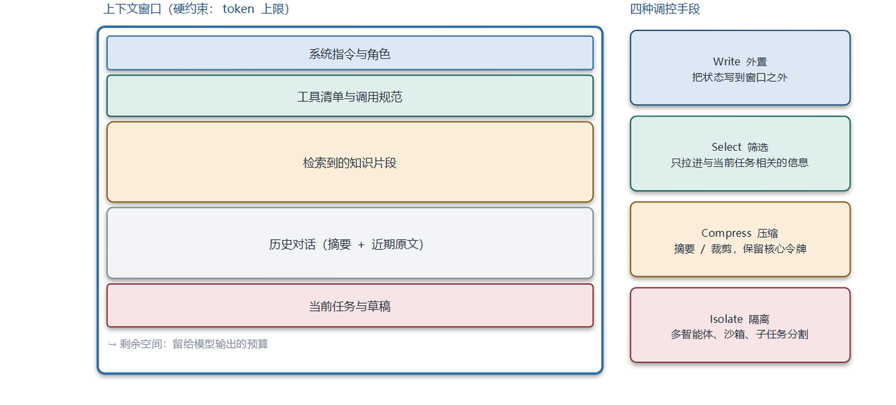
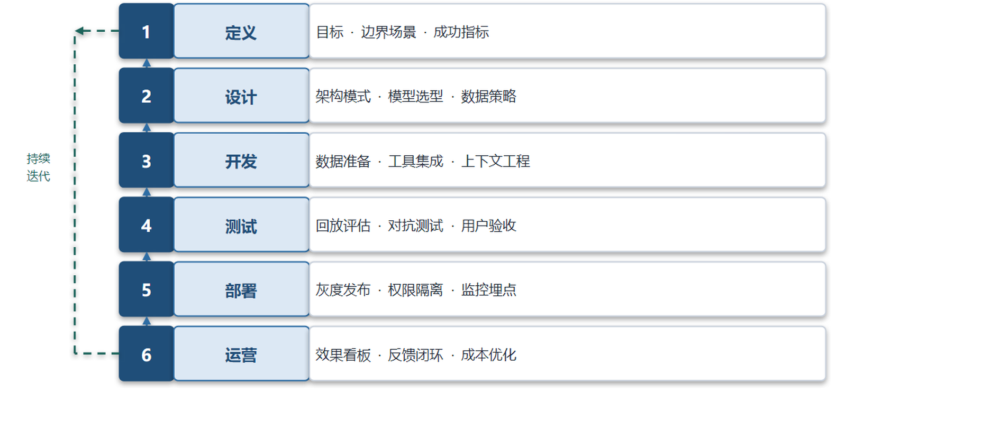

6.5 相关技术
智能体不是一个孤立的技术，而是多种技术交汇的产物。本节按”认知内核—学习方法—决策算法—知识支撑—工程环境—开发工具”的顺序，梳理支撑智能体的关键技术。理解这些技术的边界，比记住它们的名词更重要：每一种技术解决什么问题、在什么条件下失效，决定了智能体系统的能力上限与失效模式。
6.5.1 大语言模型：认知内核与它的边界
LLM 是智能体的核心认知引擎。它常被用作智能体的中央处理单元，负责解析用户输入、理解任务目标、进行推理和规划、并生成自然语言响应或行动指令。除此之外，它还提供三样基础设施。
自然语言接口。 自然语言处理技术使智能体能够理解人类的自然语言指令，并以自然语言方式与用户沟通，提供更友好、更直观的交互体验。这不只是”好用”，而是降低了任务委托的门槛：用户不需要学习特定的指令语法，只需要说清想要什么。
知识来源。 LLM 本身蕴含大量世界知识，可以作为智能体的内置知识库，用于回答问题或提供决策所需的信息。这使智能体在缺乏外部数据时仍能作出合理判断，也是它相对于传统规则系统的最大优势。
内容生成。 智能体可以利用 LLM 生成各种文本内容，如报告、摘要、代码、邮件。生成能力使智能体不仅能”做事”，还能”交付”，这是任务级委托的必要条件。
但把 LLM 当作认知内核，必须清楚它的边界。这些边界不是工程瑕疵，而是当前范式的内在特征，短期内难以根除：
· 幻觉：模型会生成看似合理但事实错误的内容，且置信度与正确性不相关。智能体的每一步都建立在前一步输出之上，错误会被放大。
· 知识截止：参数中的知识停留在训练数据的时间点，对实时信息无能为力。
· 上下文限制：窗口再长也是有限的，长任务必然面临信息的取舍。
· 推理不稳定：同一问题的不同表述可能得到不同结论，多步推理的误差会累积。
· 对齐不足：模型可能迎合用户、回避冲突、或过度自信，这些倾向在任务执行中会被放大。
这些边界共同决定了智能体架构的形态：因为会幻觉，所以需要工具校验；因为知识截止，所以需要检索；因为上下文有限，所以需要记忆；因为推理不稳定，所以需要反思与多路径验证；因为对齐不足，所以需要人在回路。 换句话说，本章讨论的每一个组件，都可以在 LLM 的某条边界上找到它的存在理由。
理解这一点，对技术选型有直接帮助。当有人问”要不要上智能体”，真正该问的是”这个任务的容错率有多高、外部信息的获取有多难、任务链条有多长”。如果任务短、容错低、信息全在模型里，一次调用就够了；只有当任务长、需要外部信息、且错误可被校验时，智能体的复杂度才是值得付出的。
6.5.2 机器学习：从数据中习得策略
智能体的”学习”能力，底层由机器学习提供。三类学习范式在智能体中有不同的落点。
监督学习（supervised learning） 通过带标签的数据进行训练，使智能体能够学习输入与输出之间的映射关系。在智能体中，它主要用于两类组件：感知（如意图分类、实体抽取、图像识别）与工具选择（给定上下文，预测应调用哪个工具、填什么参数）。监督学习的优点是稳定、可评估，缺点是需要标注数据，且难以覆盖长尾情形。
无监督学习（unsupervised learning） 从未标记数据中发现隐藏的模式或结构。它在智能体中最典型的应用是表示学习：把文本、记忆片段、工具描述编码为向量，使语义相似度可以计算。向量检索、聚类去重、异常检测都建立在这一基础之上。无监督学习不需要标注，但对”什么是有用的结构”缺乏直接约束。
强化学习（reinforcement learning，RL） 通过与环境的交互来学习。智能体采取行动，环境给予奖励或惩罚作为反馈，智能体的目标是学习一个策略，即在特定状态下应采取何种行动，以最大化累积奖励。形式化地，策略 π 的优化目标是
J(π) = Eτ~π [ Σₜ=₀T γᵗ rₜ ] (6-4)
其中 γ ∈ (0, 1] 为折扣因子，τ 为轨迹。式 (6-4) 是强化学习的核心目标函数，也是理解”智能体为什么会在意长期后果”的数学基础：折扣因子决定了它愿意为多远之后的收益付出当下代价。
强化学习与智能体的关系最为紧密，因为二者共享同一个问题结构：序贯决策。但把 RL 用在 LLM 智能体上有三个现实困难。奖励稀疏：一个长任务只有最终成败一个信号，中间步骤的好坏难以归因。试错昂贵：真实环境中试错的成本可能无法承受。非平稳：模型、工具、用户偏好都在变化，学到的策略可能迅速过时。
因此，当前工业界的做法多是”轻量 RL”：用人类反馈做偏好对齐（RLHF），用可验证的奖励（如单元测试是否通过）做特定能力的强化，而不是端到端地训练一个通用智能体策略。这一现状也提示我们：智能体的”学习”目前主要发生在提示与记忆层，而非参数层。 这既是局限，也是机会——提示与记忆的迭代成本远低于重新训练。
6.5.3 规划算法：从经典搜索到 LLM 规划
规划算法为智能体提供”如何从当前状态走到目标状态”的求解能力。它有两个传统：符号规划与决策论规划。
经典规划算法包括搜索算法（广度优先、深度优先、Dijkstra）、启发式搜索（A*、贪心最佳优先）、STRIPS 类规划器、以及部分有序规划。它们的共同假设是：状态可以用符号精确描述，动作的效果是确定的。在这一假设下，规划器可以给出完备甚至最优的解。
高级规划技术放宽了上述假设：时间规划处理带时限与并发约束的任务；概率规划处理动作效果不确定的情形（如马尔可夫决策过程）；偏好规划处理多目标之间的权衡；条件规划处理”执行过程中才发现的信息”，生成带分支的计划而非单一路径。这些技术更贴近真实世界，但求解复杂度显著上升。
LLM 在规划中的应用提供了另一条路径。模型可以通过单路径推理（如思维链 CoT）或多路径推理（如思维树 ToT）来分解复杂任务并生成行动步骤，也可以与外部经典规划器结合：模型负责理解与翻译，规划器负责求解与验证。这条路径的优势是无需形式化建模，劣势是缺乏正确性保证。
实践中，一个稳健的规划子系统往往同时包含三者：用经典算法处理可形式化的子问题（如路径、排期），用 LLM 处理需要常识与语义的子问题（如”这份材料应该包含哪些部分”），用高级规划技术处理不确定性与多目标。三者之间的接口是”计划”，而计划的可执行性由框架在执行阶段校验。
6.5.4 知识图谱：结构化的外部记忆
知识图谱（knowledge graph，KG）以”实体—关系—实体”的三元组为基本单元，把世界知识组织成可查询、可推理的网络。它在智能体中承担五项职能。
提供上下文与背景知识。 智能体可以查询 KG 以获取关于特定实体或概念的详细信息，从而更好地理解用户请求或当前环境。例如用户说”老地方”，系统通过 KG 查到该用户的历史订单与常用地址，从而消解指代。
支持结构化推理。 KG 中的显式关系可以用于逻辑推断和演绎推理，补充 LLM 可能存在的常识推理不足。“A 是 B 的子公司，B 在制裁名单上”这类多跳关系，用图查询可以精确得到，用语言模型则容易出错。
增强记忆系统。 KG 可以作为智能体长期记忆的一部分，存储结构化的事实和经验，供智能体在需要时检索和使用。相比纯文本记忆，结构化记忆在”精确召回”与”关系推理”上更有优势。
处理歧义与不完整信息。 KG 能够编码语义信息，帮助智能体区分输入信息的多种可能解释（例如”苹果”是指公司还是水果），并基于上下文、先前交互或领域知识进行判断。同时，KG 还能通过推理填补不完整数据中的空白。
作为多智能体系统的共享记忆。 在多智能体系统中，KG 可以充当通信媒介和共享记忆库，确保所有智能体对特定领域有一致的理解。这一点在多智能体协作中尤为重要：如果每个智能体各自维护一份”事实”，冲突几乎不可避免。
知识图谱的局限同样明显：构建成本高、更新滞后、覆盖面有限。因此，当前的主流做法不是”用 KG 替代文本”，而是”图谱与文本混合检索”：结构化查询负责精确约束，向量检索负责语义召回，二者结果合并后交给模型综合。
6.5.5 其他使能技术
计算机视觉（computer vision） 使智能体能够”看见”并理解视觉环境，识别物体、场景、人脸等。视觉语言模型（VLM）的出现，让智能体可以直接处理截图、表格、图表与文档版面，这极大扩展了可自动化的任务范围——大量企业流程的入口正是一张扫描件或一个网页界面。
机器人流程自动化（RPA） 用于自动化那些基于规则的、重复性的数字系统任务，例如数据输入、表单处理。RPA 与智能体是互补关系：RPA 提供稳定可靠的”手”，智能体提供灵活应变的”脑”。在没有 API 的遗留系统中，“智能体决策 + RPA 执行”往往是唯一可行的方案。
云计算（cloud computing） 为智能体的训练、部署和扩展提供了必要的计算资源、存储和可伸缩性。智能体的成本结构与传统应用不同：它的主要开销是推理调用而非服务器租用，且随任务长度线性增长，因此成本控制需要专门的设计（缓存、批处理、模型分级）。
边缘计算（edge AI） 将 AI 处理能力部署到靠近数据源的边缘设备上，可以减少对云端连接的依赖，提高实时性和数据隐私性。对具身智能体与隐私敏感场景（如医疗、家居），边缘部署往往是刚需。
表 6-7 把上述技术与智能体组件的对应关系整理出来，可以看出每一项技术都不是”可选项”，而是针对特定约束的必要补充。
表 6-7 使能技术与智能体组件的对应关系
| 技术 | 主要支撑的组件 | 解决的核心问题 | 主要局限 |
|---|---|---|---|
| 大语言模型 | 决策系统 | 语义理解、推理、生成 | 幻觉、知识截止、上下文有限 |
| 监督/无监督学习 | 感知、表示 | 分类、抽取、语义匹配 | 依赖数据质量与覆盖度 |
| 强化学习 | 策略优化 | 序贯决策的长期回报优化 | 奖励稀疏、试错昂贵 |
| 经典与高级规划 | 规划模块 | 多步行动的可执行性与最优性 | 需要形式化建模 |
| 知识图谱 | 记忆、推理 | 结构化事实与关系推理 | 构建成本高、更新滞后 |
| 计算机视觉 | 感知 | 图像、版面、场景理解 | 复杂版面与低质图像易错 |
| RPA | 执行器 | 无 API 系统的操作自动化 | 界面变化即失效 |
| 云计算/边缘计算 | 运行时 | 算力、弹性、时延与隐私 | 成本与运维复杂度 |
6.5.6 上下文工程：智能体的第一工程问题
如果说 LLM 是智能体的”大脑”，那么上下文就是它每一刻的”意识内容”。上下文工程（context engineering）是围绕”在上下文窗口中为下一步操作填充恰好适量的信息”这一目标形成的方法论。有从业者把它称为构建 AI 智能体的首要任务，这一判断并不夸张：在模型能力既定的情况下，上下文的质量往往比提示词的措辞更决定成败。
上下文的三种类型。 进入窗口的信息可以分为三类：指令，包括系统提示、角色设定、少样本示例、工具描述；知识，包括事实、检索到的文档、记忆片段；工具反馈，即工具调用后返回的信息。三类信息的性质不同，管理策略也不同：指令相对稳定，可以缓存；知识随任务变化，需要按需检索；工具反馈不可预测，需要压缩与结构化。

图 6-6 上下文窗口的构成与四种调控手段
说明：左侧为上下文的典型构成及其相对预算，右侧为写入、筛选、压缩、隔离四种调控手段。
上下文导致的四类性能问题。 上下文不是越多越好，过量的、错误的、矛盾的信息会主动损害性能。业界总结出四种典型失效模式：
· 上下文污染（context poisoning）：当幻觉信息混入上下文时，后续推理会把它当作事实，错误被反复引用而不断强化。污染的特点是”自我确认”——模型看到自己此前的错误陈述，更倾向于认为它是对的。
· 上下文干扰（context distraction）：当信息过多、超出模型的有效处理范围时，注意力被稀释，关键信息被淹没。即使窗口装得下，模型也未必用得上。
· 上下文混淆（context confusion）：当冗余信息、格式混乱的信息干扰决策时，模型可能抓错重点，或把不同来源的信息混为一谈。
· 上下文冲突（context clash）：当上下文内容相互矛盾时，模型需要在冲突的信息之间选择，选择往往不可预测，且可能在不同轮次给出不同答案。
四大调控策略。 针对上述问题，实践中形成了四种普遍应用的策略：
1. 保存上下文（write）：将信息存储到上下文窗口之外，供智能体后续任务使用。这是记忆系统的职责，也是”窗口有限”这一约束的根本解法。
2. 筛选上下文（select）：将相关信息拉入上下文窗口，辅助智能体进行当前任务。核心是检索质量——召回不准，后续一切白费；召回过多，又会引入干扰。
3. 压缩上下文（compress）：通过总结或裁剪，仅保留任务所需的核心令牌。压缩的关键是”保信息、去冗余”，而不是简单截断。
4. 隔离上下文（isolate）：通过多智能体、沙箱或状态管理进行上下文分割。让不同的子任务在各自的窗口中工作，避免相互污染。这是多智能体架构在工程上最重要的收益之一——它首先是一种上下文管理手段，其次才是一种协作手段。
上下文工程的核心组件。 一个完整的上下文工程体系通常包含四个部分：智能信息检索（RAG），负责从外部知识源召回相关内容；动态上下文组装，负责按任务阶段、模型能力与预算，把指令、知识、工具反馈拼装成最优的窗口布局；智能记忆管理，负责跨轮次的信息保存与召回；多模态信息处理，负责把图像、表格、音频等非文本信息转化为模型可消费的形式。
从 token 限制到记忆架构。 当前大模型在长任务中面临两个具体困境：token 限制，窗口再大也有上限，且成本随长度上升；状态丢失，会话中断或上下文被裁剪后，之前的工作状态无法恢复。针对这两个问题，工程上出现了以 MCP（Model Context Protocol）为代表的上下文管理方案，其思路包括三层：
· 智能化的上下文分层管理：把上下文按稳定性与重要性分层，稳定的部分缓存复用，易变的部分按需加载。
· 会话管理机制：显式地保存与恢复会话状态，使任务可以跨会话延续。
· 智能化的上下文压缩：在接近上限时自动摘要、裁剪、外置，保持关键信息不丢失。
与之配套的是三层记忆架构：即时记忆层保存当前对话内容、近期操作记录与暂时工作状态；工作记忆层保存项目相关上下文、任务执行状态与决策历程记录；长期记忆层保存历史对话摘要、学习模式记录与知识库累积。三层架构的核心价值在于四点：连续性，跨会话保持工作状态和决策记录；智能性，自动评估和管理上下文重要性；可扩展性，支持企业级的大规模部署；安全性，保护敏感信息和个人隐私。
值得强调的是，上下文工程不是”提示词工程的升级版”，二者的关注点不同。提示词工程关注”如何把一句话说清楚”，上下文工程关注”在正确的时刻，让模型看到正确的信息组合”。后者是一个系统问题，涉及检索、记忆、压缩、隔离、预算分配与安全边界，其复杂度远高于前者。
6.5.7 开发框架：把模式固化为基础设施
智能体的很多模式（循环、工具调用、记忆、多智能体协作）在 2023—2024 年间迅速沉淀为开发框架。框架的价值在于把重复的”脚手架”固化下来，让开发者专注于任务逻辑；框架的风险在于抽象泄漏——当框架的默认行为与任务需求不符时，开发者需要深入内部才能修正。
表 6-8 对当前主流的五个框架作了对照。需要说明的是，框架的迭代速度极快，表中的”成熟度”只具有阶段性参考意义，选型时应以当时的官方文档与实际压测为准。
表 6-8 主流智能体开发框架对照
| 框架 | 特性 | 典型应用场景 | 模块化 | 可扩展性 | 成熟度 | 学习曲线 |
|---|---|---|---|---|---|---|
| LangChain | LLM 应用开发，链式调用，Agent、记忆、工具集成 | 聊天机器人、文档处理、RAG、企业工作流自动化 | 高 | 中 | Beta | 较陡 |
| LangGraph | 构建状态化、可控的（多）Agent 工作流，基于图 | 复杂多步骤流程、动态决策、人工介入 | 高 | 中高 | Beta | 陡峭 |
| AutoGen | 多 Agent 对话与协作，异步，可定制 Agent 角色 | 群聊式问题求解、代码生成与调试、动态交互场景 | 高 | 高 | 预览 | 较陡 |
| CrewAI | 角色扮演型 Agent 团队协作，任务委派 | 研究团队、项目管理、内容创作、多 Agent 协作 | 中 | 高 | 可用 | 简单 |
| Semantic Kernel | 企业级 SDK，技能封装，规划器，多语言支持 | 将 AI 嵌入现有业务流程、企业应用、与云平台集成 | 中 | 高 | 生产 | 中等 |
选型时可以用三个问题快速定位。第一，控制流的复杂度。 如果流程是线性的、步骤固定的，轻量框架足矣；如果流程包含循环、分支、并行与人工介入，需要图式编排能力。第二，可观测性的要求。 生产系统必须能回放每一次运行的完整轨迹，包括每次模型调用的输入输出、每次工具调用的参数与结果。框架若没有内建的追踪能力，需要额外的埋点。第三，团队的技术栈。 企业环境往往要求与既有的身份、权限、监控体系集成，此时”与现有基础设施的贴合度”比”功能丰富度”更重要。
一个常被忽略的事实是：框架不能替你解决任务定义问题。 大量项目失败，不是因为框架选错，而是因为任务边界、成功标准、异常处理没有想清楚。这也是下一节要把开发流程单独讨论的原因。
6.5.8 开发流程：从定义到运营
智能体的开发流程与常规软件工程有相似之处，但重心明显不同。图 6-3 给出了一个六阶段的典型生命周期。

图 6-3 智能体系统的开发生命周期
说明：六个阶段构成闭环：定义、设计、开发、测试、部署、运营。右侧虚线表示运营阶段的反馈会回流到定义与设计。
一、定义（目标、范围、指标）。 明确任务边界：系统要完成什么、不完成什么、在什么条件下算成功。这一步的产出应当是可检验的验收标准，而不是一段愿景描述。“帮助用户规划差旅”不是验收标准，“在 5 分钟内给出满足预算、时间与偏好约束的方案，且所有价格可溯源”才是。同时要明确失败模式：哪些错误可以接受，哪些绝对不能发生。
二、设计（架构、模型选择、数据策略）。 架构选择包括：单智能体还是多智能体、循环式还是计划式、是否需要长期记忆、工具边界如何划分。模型选择不是”越强越好”，而要综合考虑能力、时延、成本与可控性，常见做法是分级：用强模型做规划与复杂推理，用轻模型做分类、抽取与格式转换。数据策略包括：工具返回的数据如何规范化、历史轨迹如何留存、评估集如何构建。
三、开发（数据准备、模型训练/微调、工具集成）。 这一阶段的重点是工具集成与上下文工程。工具要按第 6.2.3 节的原则设计：单一职责、强类型、错误可读。上下文要按第 6.5.6 节的策略组织：什么常驻、什么按需检索、什么压缩、什么隔离。
四、测试（验证、性能评估、用户验收）。 智能体的测试比常规软件困难得多，因为输出不确定、路径不唯一。有效的做法包括：回放测试，把历史真实请求固定下来，比较改动前后的行为差异；断言式评估，不比对完整输出，只检查关键约束（价格是否在预算内、是否包含必要字段）；对抗测试，构造注入攻击、边界输入、冲突指令，检验系统的防御；用户验收，让真实用户在真实任务上使用，观察完成率与干预率。
五、部署（集成、上线）。 部署的关键词是”渐进”：灰度发布、影子模式（让新系统在后台运行但不影响用户）、功能开关。智能体的行为依赖模型版本，因此模型升级必须像代码发布一样对待——需要回归测试，需要可回滚。
六、监控与优化（性能跟踪、反馈收集、持续改进）。 上线不是终点。需要持续跟踪的指标包括：任务成功率、平均轮数、平均成本、人工干预率、失败原因分布。这些指标共同构成”效果—成本—风险”三角，任何一项恶化都应触发排查。
一个来自可靠性的算术。 假设单步成功率为 0.95，一个需要 10 步的任务，整体成功率约为 0.95^10 ≈ 0.60；若单步成功率为 0.99，则约 0.90。这个简单的计算解释了两件事：为什么长任务智能体如此难做，以及为什么”减少步数”和”提高单步可靠性”是两条并行的优化路径。前者靠更好的规划与工具合并，后者靠校验、重试与更专一的工具设计。
这也是图 6-3 中”运营”被单列的原因。智能体的质量不是一次性交付的，而是在真实分布的反馈中逐步收敛的。一个没有运营闭环的智能体系统，其效果会在环境变化后迅速衰减。